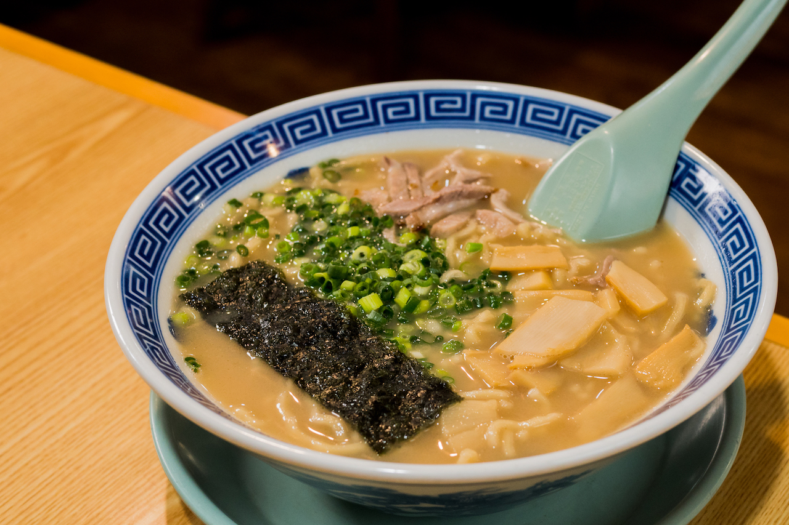
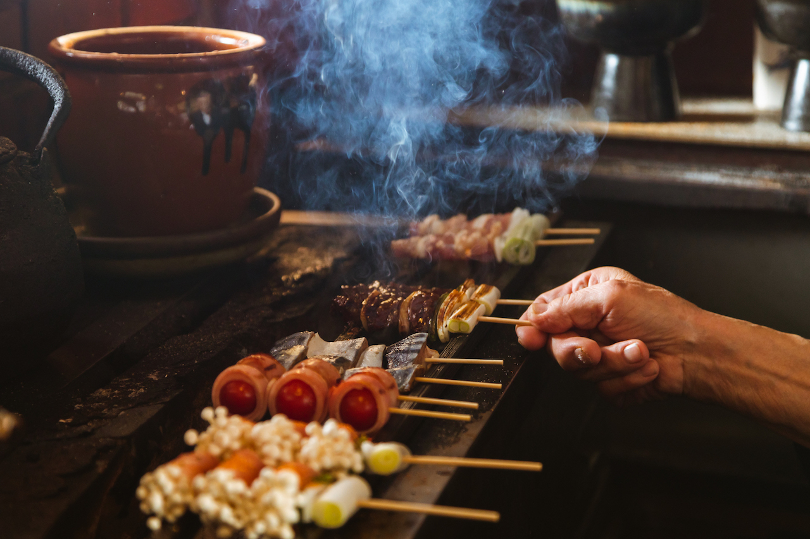
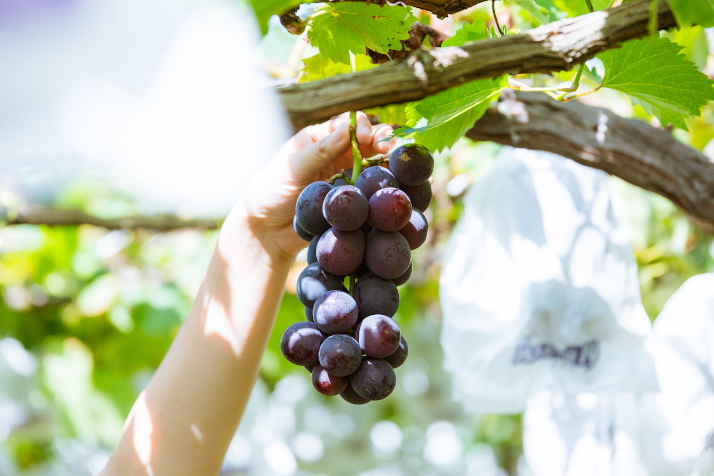

久留米の名物グルメ

久留米ラーメン
久留米を代表するご当地グルメです。 豚骨スープと細麺が特徴で、 濃厚ながらも食べやすい味わいが楽しめます。

久留米焼き鳥
久留米は焼き鳥店が多いことでも知られています。 豚バラや鶏肉など、さまざまな種類の 焼き鳥を楽しむことができます。

久留米うどん
やわらかくもちもちとした麺と、 だしのきいたつゆが特徴のうどんです。 地元で長く親しまれています。

久留米のスイーツ
「フルーツ狩り（観光農園）」と 「フルーツカフェ・パフェ」の 2つの楽しみ方があります。 食後のお土産にもおすすめです。